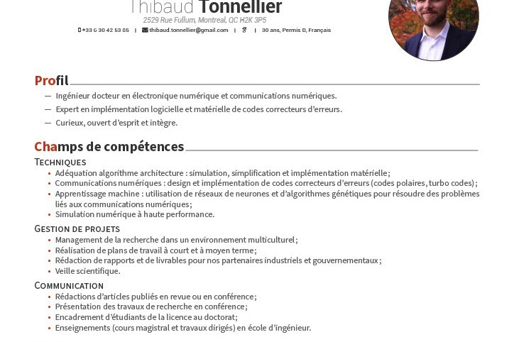

Thibaud Tonnellier
Adequation between Algorithm and Silicium
Short Bio
I am currently a postdoctoral researcher at McGill University in Montréal, Québec with Prof. Warren J. Gross . Previously, I was completing my Ph.D. thesis under the supervision of Prof. Christophe Jégo at the IMS Lab in Bordeaux, France . In 2013, I graduated from the engineering school Enseirb-Matmeca, also located in Bordeaux.
My main research projects concern building efficient hardware architectures and software for error-correcting codes. While my Ph.D. thesis was dealing with turbo codes, my PostDoc mainly focuses on polar codes. In more details, my current research interests are:
- Energy-Efficient Polar Decoders
- Near-ML Decoding
- Machine Learning-Aided Decoders
Publications
Résumé
